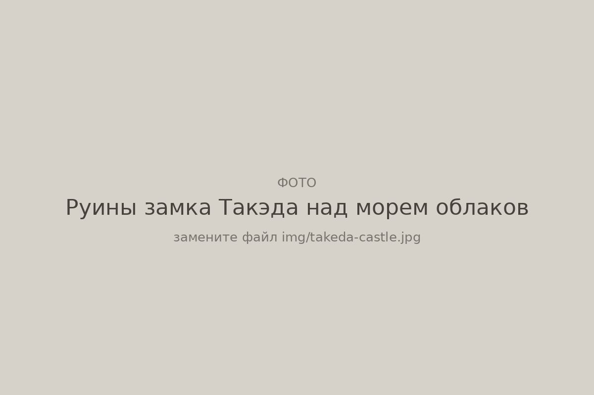
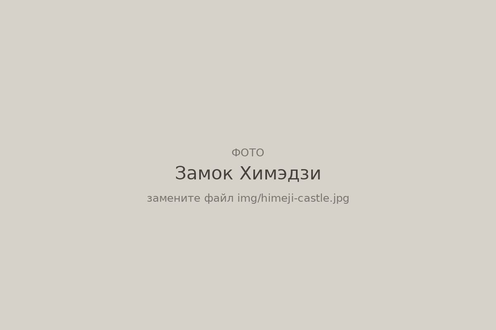
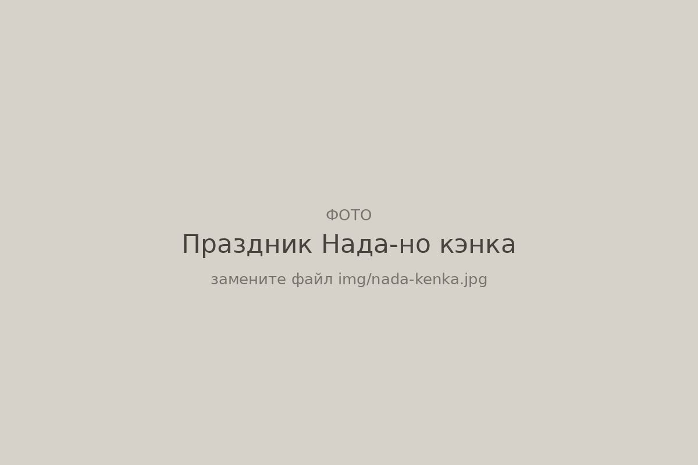
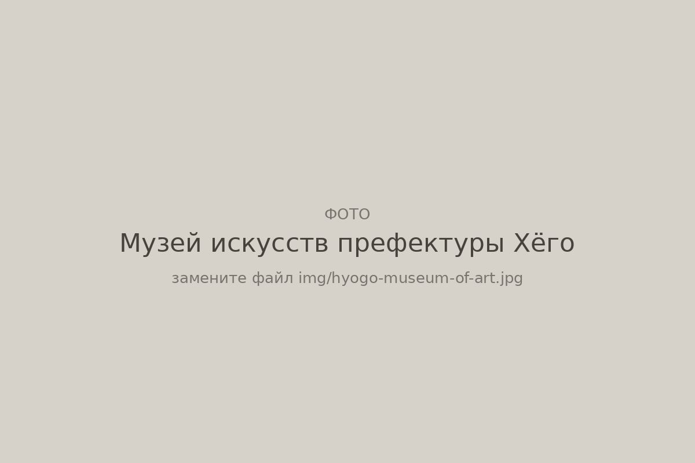
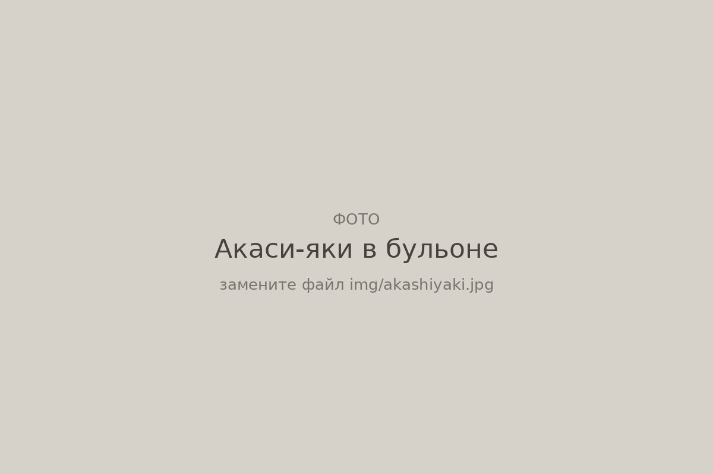
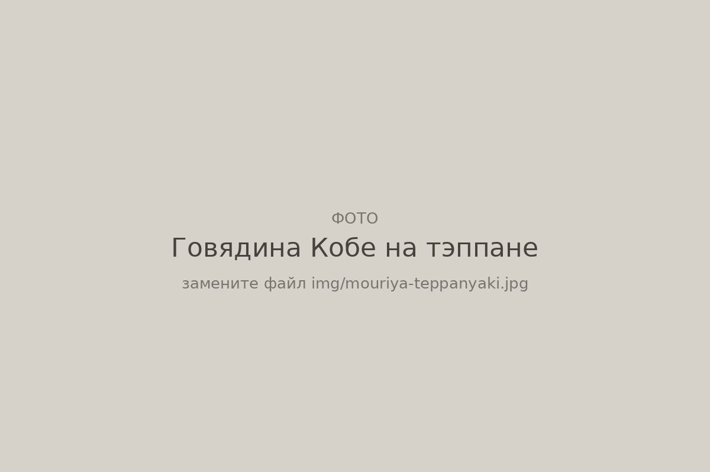
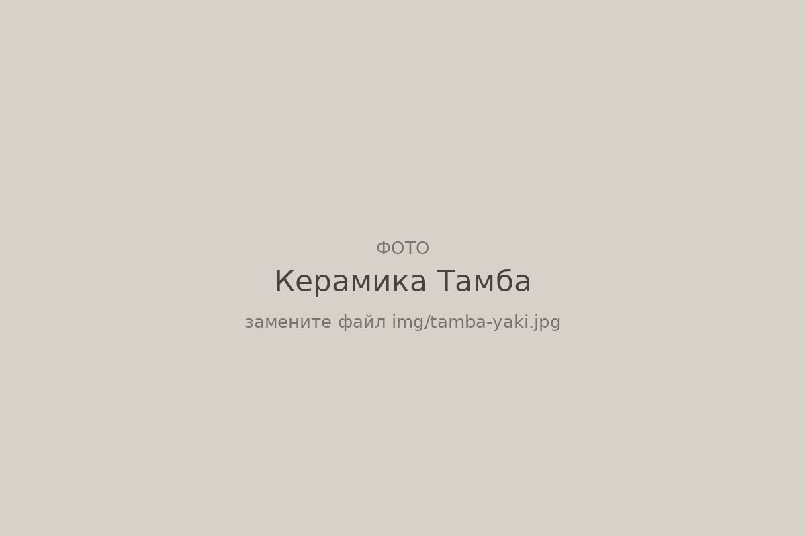
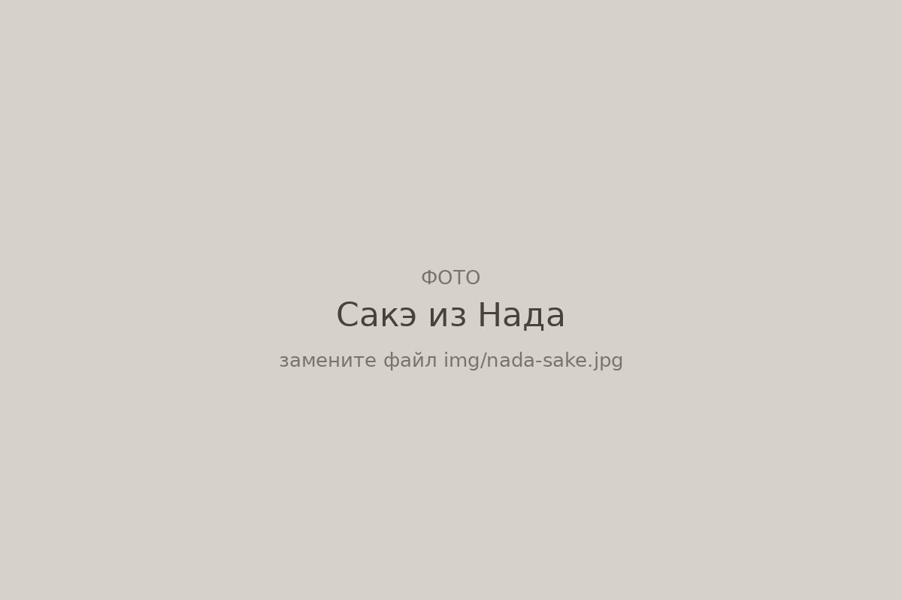
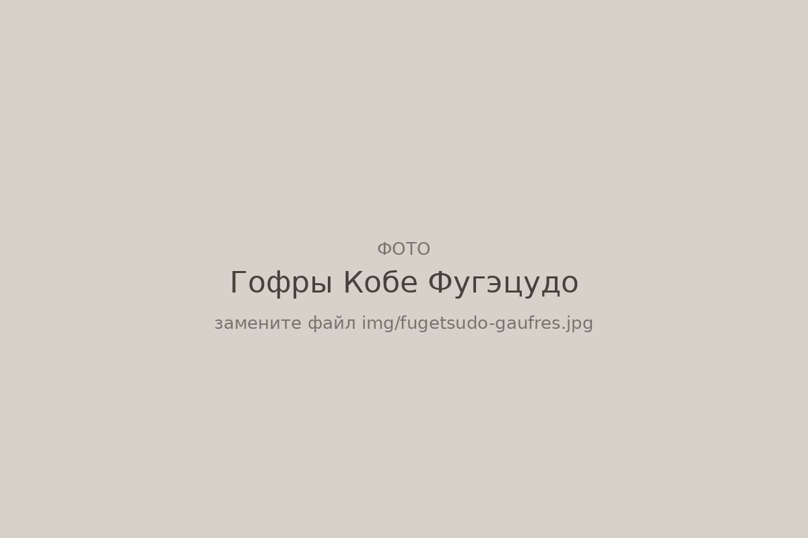
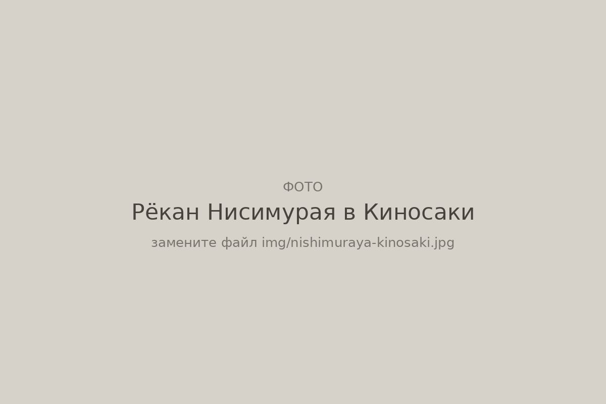

Префектура Хёго
Хёго: белый замок, сакэ из Нада и онсэны у двух морей

Руины замка Такэда на рассвете поднимаются над морем облаков, за это их называют «замком в небесах»
Самый красивый замок Японии, почти треть всего японского сакэ, носилки с божествами, которые сталкивают друг с другом на осеннем празднике, и курорт, где гости гуляют по улицам в юкате. Рассказываем, за чем ехать в Хёго.
О префектуре
Пять старых провинций под одним именем
Хёго самая большая по площади префектура региона Кансай, то есть региона вокруг Осаки и Киото. Она выходит сразу к двум морям: на севере к Японскому, на юге к Внутреннему морю Сэто-Найкай, усыпанному островами. Префектура сложилась из пяти старых провинций: Сэццу, Харима, Тадзима, Тамба и остров Авадзи, поэтому японцы до сих пор называют её «пять стран Хёго».
Столица префектуры, Кобе, в 1868 году одним из первых портов Японии открылся для иностранной торговли. Купцы из Европы и Америки строили здесь свои дома, и в квартале Китано они стоят до сих пор. Японцы называют их идзинкан, то есть «дома иностранцев».
А ещё Хёго главный винный погреб страны: здесь варят почти треть всего японского сакэ. В 1923 году именно здесь вывели сорт риса, который пивовары считают лучшим для сакэ. И даже японское время отсчитывают отсюда: через город Акаси проходит меридиан, по которому живёт вся страна.
Что посмотреть
Белая цапля над равниной Харима
Замок Химэдзи
Белоснежный замок с изогнутыми крышами японцы ласково зовут Сирасаги-дзё, «замок белой цапли». Его главная башня стоит с начала XVII века и пережила войны, землетрясения и бомбёжки, поэтому это один из немногих японских замков, который сохранился в подлинном виде. Башня признана национальным сокровищем, а в 1993 году замок одним из первых в Японии вошёл в список Всемирного наследия ЮНЕСКО.

- Адрес
- 68 Honmachi, Himeji, Hyogo
- Телефон
- +81 79-285-1146
- Часы
- с 9:00 до 17:00, последний вход в 16:00
- Выходные
- 29 и 30 декабря
Что ещё посмотреть
- Онсэн Киносаки, курортный городок с семью общественными купальнями, между которыми гуляют прямо в юкате, лёгком хлопковом кимоно
- Руины замка Такэда, каменные стены на вершине горы, которые осенними утрами поднимаются над облаками
- Онсэн Арима, один из древнейших курортов Японии, знаменитый рыжей «золотой» и прозрачной «серебряной» водой
Праздники
Праздник, где носилки с богами бьются друг о друга
Нада-но кэнка мацури
Название переводится как «праздник драки в Нада», и оно не преувеличивает. Каждую осень у местного святилища в Химэдзи сталкивают друг с другом три микоси, переносных святилища, в которых, по поверьям, едет божество. Чем сильнее удар, тем больше радуется бог. Вокруг под барабаны раскачивают нарядные повозки-ятай из семи окрестных районов. Праздник охраняется как нематериальное культурное наследие префектуры.

- Когда
- 14 и 15 октября
- Место
- святилище Мацубара Хатиман, город Химэдзи
Другие праздники
- Кобе Луминарие, зимний праздник света, который появился в 1995 году в память о жертвах Великого землетрясения Хансин
- Ако Гиси-сай, шествие 14 декабря в честь 47 ронинов из Ако, самураев из самой знаменитой японской истории о верности
- Праздник Кобе, большой весенний городской карнавал с парадом по центральным улицам
Музеи и архитектура
Бетон и стекло на берегу залива
Музей искусств префектуры Хёго
Одно из главных зданий Тадао Андо, японского архитектора, который получил Притцкеровскую премию, самую почётную награду в архитектуре. Музей открылся в 2002 году на берегу залива Осака: его строили как символ возрождения Кобе после землетрясения 1995 года. Гладкий бетон, стеклянные галереи и открытые лестницы к морю сами по себе стоят поездки, а внутри собрана большая коллекция японского и западного искусства.

- Адрес
- 1-1-1 Wakinohamakaigan-dori, Chuo-ku, Kobe, Hyogo
- Телефон
- +81 78-262-1011
- Часы
- с 10:00 до 18:00
- Выходные
- понедельник
Что ещё посмотреть
- Дом с флюгером, кирпичный особняк немецкого купца 1909 года в квартале Китано, с флюгером в виде петуха на крыше
- Портовая башня Кобе, красная решётчатая башня 1963 года, символ городской гавани
- Музей литературы города Химэдзи, ещё одна работа Тадао Андо с видом на замок
Местная кухня
Омлет с осьминогом, который едят ложкой из бульона
Акаси-яки
Родственник знаменитых такояки из Осаки, только нежнее. Шарики из жидкого теста, в котором больше яиц, чем муки, с кусочком осьминога внутри, пекут в медной форме и подают на деревянной доске. Едят их, окуная в лёгкий бульон даси, отвар из сушёной рыбы и водорослей. Сами жители Акаси называют это блюдо просто тамагояки, «жареные яйца».

Что ещё попробовать
- Говядина Кобе, одна из трёх самых знаменитых японских мраморных говядин, с очень строгими правилами отбора
- Собамэси, лапша, обжаренная вместе с рисом на железной плите, родом из рабочего района Нагата в Кобе
- Иканаго-но кугини, мелкая рыбка песчанка, томлённая в соевом соусе с имбирём, весеннее домашнее блюдо
Где поесть
Мраморная говядина прямо с раскалённой плиты
Моурия, главный ресторан
Ресторан работает с 1885 года и считается одним из старейших мест в Кобе, где подают местную говядину. Готовят по-японски, на тэппане: повар жарит стейк на раскалённой железной плите прямо перед гостем, сидящим у стойки, и тут же нарезает его.

- Адрес
- 2-1-17 Shimoyamate-dori, Chuo-ku, Kobe, Hyogo
- Телефон
- +81 78-391-4603
- Часы
- с 11:00 до 22:00, последний заказ в 21:00
- Сайт
- mouriya.co.jp
Ремёсла
Глиняная посуда, которую обжигают уже восемьсот лет
Керамика Тамба
Тамба-яки входит в число шести старинных керамических промыслов Японии. Посуду здесь делают около восьмисот лет, и длинные печи ноборигама, которые ступенями поднимаются по склону холма, топят до сих пор. Пепел от дров оседает на сосудах и сам превращается в глазурь, поэтому двух одинаковых изделий не бывает. В парке ремёсел можно посмотреть работы местных мастеров и попробовать себя за гончарным кругом.

- Справки
- парк ремёсел Тамба, Татикуи Суэ-но сато
- Адрес
- 3 Kamitachikui, Imada-cho, Tambasasayama, Hyogo
- Телефон
- +81 79-597-2034
- Часы
- с 10:00 до 17:00
- Выходные
- с 29 декабря по 3 января
Что ещё посмотреть
- Ручные пилы и инструменты из Мики, город кузнецов, где делают больше ручных пил, чем где-либо в Японии
- Сумки из Тоёока, крупнейший в Японии центр по производству сумок
- Счёты из Оно, деревянные соробан, японские счёты, которые здесь делают вручную
Что привезти
Сакэ из пяти деревень и вафли из старого порта
Сакэ из Нада
Побережье возле Кобе называют Нада-гого, «пять деревень Нада». Сакэ здесь варят с XIV века, а секрет местного вкуса в воде миямидзу: она богата минералами и почти не содержит железа, которое портит цвет напитка. Лучше всего знакомиться с ним в музее пивоварни Хакуцуру. Он занимает старое здание начала XX века, где сакэ варили до 1969 года, а в конце экскурсии дают попробовать несколько сортов.

- Справки
- музей пивоварни Хакуцуру
- Адрес
- 4-5-5 Sumiyoshi-minamimachi, Higashinada-ku, Kobe, Hyogo
- Телефон
- +81 78-822-8907
- Часы
- с 9:30 до 16:30, последний вход в 16:00
- Цена
- вход бесплатный
Гофры Кобе Фугэцудо
Тонкие хрустящие вафли с нежным кремом внутри стали сладким символом Кобе. Кондитерская работает с 1897 года, и её жестяные коробки с гофрами японцы привозят из Кобе в подарок.

- Адрес
- 3-3-10 Motomachi-dori, Chuo-ku, Kobe, Hyogo
- Телефон
- +81 78-321-5598
- Часы
- с 10:00 до 18:00
- Выходные
- второй и четвёртый вторник месяца
Где остановиться
Деревянный рёкан в городке семи купален
Нисимурая Хонкан
Рёкан, то есть традиционная японская гостиница с татами и горячими источниками, принимает гостей в Киносаки с середины XIX века, больше 165 лет. Его деревянные корпуса внесены в реестр культурных ценностей Японии. Отсюда удобно, как это принято в Киносаки, надеть юкату и пройтись по всем семи общественным купальням городка.

- Адрес
- 469 Yushima, Kinosaki-cho, Toyooka, Hyogo
- Телефон
- +81 796-32-2211
Местный диалект
Как говорят в Кобе и Химэдзи
- Нани ситон?Ты что делаешь?
- Дабо!Дурак! (резкое словечко Харимы)
- ХокаситоитэВыброси это
Рекорды
Три первых места страны
- №1 по производству сакэ, почти треть всего японского
- №1 по выращиванию нори, морских водорослей для суши
- №1 по производству спичек, около 80% японских спичек
Вопросы и ответы
Проверьте себя
Почему время во всей Японии отсчитывают от города Акаси?
Через Акаси проходит меридиан 135 градусов восточной долготы, и в 1886 году именно его выбрали основой японского стандартного времени. В 1960 году прямо на меридиане открыли городской планетарий, а часы на его башне стали символом «города времени».
Какой знаменитый театр, где все роли играют женщины, родился в Хёго?
Такарадзука. Первое представление труппа дала в 1914 году в городе Такарадзука, в зале, переделанном из бассейна. Сегодня это одно из самых популярных зрелищ Японии, а в Такарадзуке работает её главный театр.
Справочник
Хёго в цифрах
Общие данные
| Административный центр | Кобе |
| Муниципалитеты | 29 городов и 12 посёлков |
| Площадь | 8401 км² |
| Население | 5,39 млн человек |
| Плотность населения | 642 чел./км² |
| Символ-дерево | камфорное дерево |
| Символ-цветок | нодзигику, дикая хризантема |
| Символ-птица | дальневосточный аист |
Для путешественника
| Всемирное наследие | замок Химэдзи |
| Национальные парки | Сэто-Найкай и Санъин-Кайган |
| Самые известные онсэны | Арима и Киносаки |